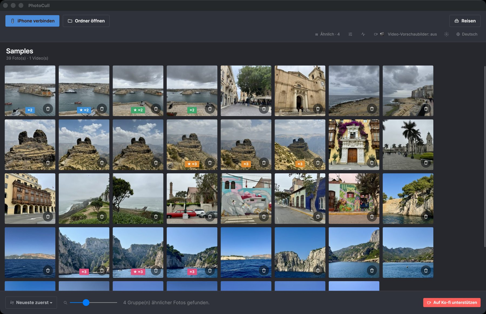
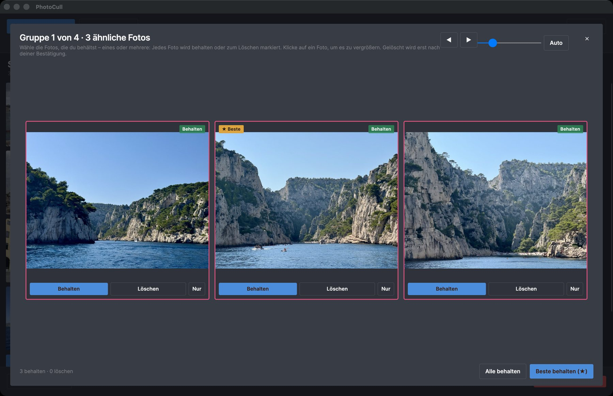
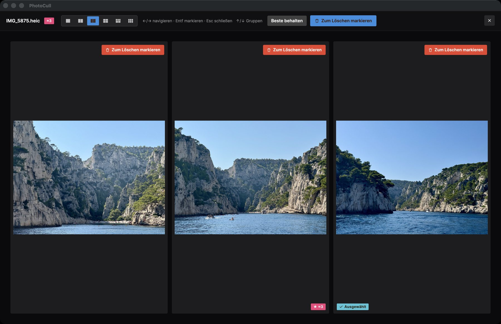

Das echte Werkzeug, um Tausende Fotos zu sortieren
PhotoCull ist eine vollwertige Desktop-Anwendung: Sie zeigt deine gesamte iPhone-Fotorolle nach Aufenthalt gruppiert, vergleicht deine Fotos nebeneinander und löscht in großen Mengen, was sich nicht mehr zu behalten lohnt — direkt von deinem Mac aus.
Kostenlos · macOS 11+ auf Apple Silicon · von Apple signiert und notarisiert

Ein Blick in die App


Was die App kann
Ansicht "Reisen / Aufenthalte"
Deine gesamte Fotobibliothek automatisch nach Aufenthalt gruppiert (Zeit UND Ort, genau wie bei der iOS-App) — erkenne auf einen Blick, welche Reisen am meisten Platz beanspruchen.
Seite-an-Seite-Vergleich
Zeige bis zu 6 ähnliche Fotos gleichzeitig an, um das beste auszuwählen — ideal zum Sortieren von Serienbildern und Beinahe-Duplikaten.
Sicheres Löschen in großen Mengen
Markiere Hunderte von Fotos in wenigen Klicks. Das eigentliche Löschen läuft über die Begleit-App auf deinem iPhone und „Kürzlich gelöscht“ (30 Tage) — nie ein sofortiges endgültiges Löschen.
Die Größe, die zählt
Sortiere und filtere nach eintägigem Aufenthalt, nach ausgeschlossenem Ort (Zuhause, Arbeit...), nach Größe — dieselben Filter wie bei der iOS-App, auf Geschwindigkeit ausgelegt.
Direkte Verbindung zum iPhone
Schließe dein iPhone per USB an (oder nutze den Simulationsmodus zum Testen): PhotoCull liest deine Fotorolle direkt, ganz ohne iCloud und ohne Server.
100% offline
Kein Foto, kein GPS-Standort wird jemals irgendwohin gesendet. Die Ortserkennung läuft vollständig lokal, ohne Konto und ohne Abo.
Kostenlos, mit zwei Einmal-Upgrades
Nie ein Abo. Durchsuchen, Vergleichen und Sortieren ist immer kostenlos. Die Pläne legen nur fest, wie viele Fotos du pro Tag löschen kannst.
Kostenlos
0 $
Alles durchsuchen, vergleichen und sortieren. 3 Löschvorgänge pro Tag auf dem iPhone und bis zu 6 Fotos pro Tag vom Mac aus.
Pro
4,99 $ · einmalig
Unbegrenztes Löschen auf dem iPhone, unbegrenzt eigene Orte und Sammelaktionen für mehrere Aufenthalte. Bis zu 15 Fotos pro Tag vom Mac aus.
Pro + Desktop
24,99 $ · einmalig
Alles von Pro, plus unbegrenztes Löschen über PhotoCull auf deinem Mac.
Preise in US-Dollar; der App Store zeigt sie in deiner Währung an. Du kaufst in der iOS-App TripSweep, PhotoCull folgt über dein iPhone. Einen Ordner auf dem Mac zu sortieren ist nie begrenzt.
Funktioniert mit der iOS-App TripSweep
Die Fotos deines iPhones durchsuchen, vergleichen und sortieren funktioniert allein: Schließe es einfach per USB an. Um Fotos wirklich vom iPhone zu löschen, brauchst du außerdem die iOS-App TripSweep (kostenlos), die das Löschen auf dem Telefon über „Kürzlich gelöscht“ ausführt und die Analyse der Aufenthalte nahezu augenblicklich macht. Ordner auf deinem Mac lassen sich auch ohne sie sortieren.